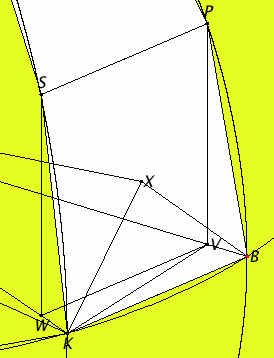

Let there be two spheres about the same center A.
It is required to inscribe in the greater sphere a polyhedral solid which does not touch the lesser sphere at its surface.
Cut the spheres by any plane through the center. Then the sections are circles, for as a sphere is produced by the diameter remaining fixed and the semicircle being carried round it, hence, in whatever position we conceive the semicircle to be, the plane carried through it produces a circle on the circumference of the sphere.
And it is clear that this circle is the greatest possible, for the diameter of the sphere, which is of course the diameter both of the semicircle and of the circle, is greater than all the straight lines drawn across in the circle or the sphere.
Let then BCDE be the circle in the greater sphere, and FGH the circle in the lesser sphere. Draw two diameters in them, BD and CE, at right angles to one another.
Then, given the two circles BCDE and FGH about the same center, inscribe in the greater circle BCDE an equilateral polygon with an even number of sides which does not touch the lesser circle FGH.
Let BK, KL, LM, and ME be its sides in the quadrant BE. Join KA and carry it through to N. Set AO up from the point A at right angles to the plane of the circle BCDE, and let it meet the surface of the sphere at O.
Carry planes through AO and each of the straight lines BD and KN. They make the greatest circles on the surface of the sphere for the reason stated.
Let them make such, and in them let BOD and KON be the semicircles on BD and KN.
Now, since OA is at right angles to the plane of the circle BCDE, therefore all the planes through OA are also at right angles to the plane of the circle BCDE. Hence the semicircles BOD and KON are also at right angles to the plane of the circle BCDE.
And, since the semicircles BED, BOD, and KON are equal, for they are on equal diameters BD and KN, therefore the quadrants BE, BO, and KO equal one another.
Therefore there are as many straight lines in the quadrants BO and KO equal to the straight lines BK, KL, LM, and ME as there are sides of the polygon in the quadrant BE.
Inscribe them as BP, PQ, QR, and RO and as KS, ST, TU, and UO. Join SP, TQ, UR, and draw perpendiculars from P and S to the plane of the circle BCDE.
These will fall on BD and KN, the common sections of the planes, for the planes of BOD and KON are also at right angles to the plane of the circle BCDE.
Let them so fall as PV and SW, and join WV.
Now since, in the equal semicircles BOD and KON, equal straight lines BP and KS have been cut off, and the perpendiculars PV and SW have been drawn, therefore PV equals SW, and BV equals KW.
But the whole BA also equals the whole KA, therefore the remainder VA also equals the remainder WA. Therefore BV is to VA as KW is to WA. Therefore WV is parallel to KB.
And, since each of the straight lines PV and SW is at right angles to the plane of the circle BCDE, therefore PV is parallel to SW.
But it was also proved equal to it, therefore WV and SP are equal and parallel.
And, since WV is parallel to SP, and WV is parallel to KB, therefore SP is also parallel to KB.
And BP and KS join their ends, therefore the quadrilateral KBPS is in one plane, for if two straight lines are parallel, and points are taken at random on each of them, then the straight line joining the points is in the same plane with the parallels. For the same reason each of the quadrilaterals SPQT and TQRU is also in one plane.
But the triangle URO is also in one plane. If then we join straight lines from the points P, S, Q, T, R, and U to A, then there will be constructed a certain polyhedral solid figure between the circumferences BO and KO consisting of pyramids of which the quadrilaterals KBPS, SPQT, and TQRU and the triangle URO are the bases and the point A is the vertex.
And, if we make the same construction in the case of each of the sides KL, LM, and ME as in the case of BK, and further, in the case of the remaining three quadrants, then there will be constructed a certain polyhedral figure inscribed in the sphere and contained by pyramids, of which the said quadrilaterals and the triangle URO, and the others corresponding to them, are the bases and the point A is the vertex.
I say that the said polyhedron does not touch the lesser sphere at the surface on which the circle FGH is.
Draw AX from the point A perpendicular to the plane of the quadrilateral KBPS, and let it meet the plane at the point X. Join XB and XK.
Then, since AX is at right angles to the plane of the quadrilateral KBPS, therefore it is also at right angles to all the straight lines which meet it and are in the plane of the quadrilateral. Therefore AX is at right angles to each of the straight lines BX and XK.
And, since AB equals AK, therefore the square on AB equals the square on AK. And the sum of the squares on AX and XB equals the square on AB, for the angle at X is right, and the sum of the squares on AX and XK equals the square on AK.
Therefore the sum of the squares on AX and XB equals the sum of the squares on AX and XK.
Subtract the square on AX from each, therefore the remainder, the square on BX, equals the remainder, the square on XK. Therefore BX equals XK.
Similarly we can prove that the straight lines joined from X to P and S are equal to each of the straight lines BX and XK.
Therefore the circle with center X and radius on of the straight lines XB or XK passes through P and S also, and KBPS is a quadrilateral in a circle.
Now, since KB is greater than WV, and WV equals SP, therefore KB is greater than SP. But KB equals each of the straight lines KS and BP, therefore each of the straight lines KS and BP is greater than SP. And, since KBPS is a quadrilateral in a circle, and KB, BP, and KS are equal, and PS less, and BX is the radius of the circle, therefore the square on KB is greater than double the square on BX.
Draw KZ from K perpendicular to BV.
Then, since BD is less than double DZ, and BD is to DZ as the rectangle DB by BZ is to the rectangle DZ by ZB, therefore if a square is described on BZ and the parallelogram on ZD is completed, then the rectangle DB by BZ is also less than double the rectangle DZ by ZB. And, if KD is joined, then the rectangle DB by BZ equals the square on BK, and the rectangle DZ by ZB equals the square on KZ. Therefore the square on KB is less than double the square on KZ.
But the square on KB is greater than double the square on BX, therefore the square on KZ is greater than the square on BX. And, since BA equals KA, therefore the square on BA equals the square on AK.
And the sum of the squares on BX and XA equals the square on BA, and the sum of the squares on KZ and ZA equals the square on KA, therefore the sum of the squares on BX and XA equals the sum of the squares on KZ and ZA, and of these the square on KZ is greater than the square on BX, therefore the remainder, the square on ZA, is less than the square on XA.
Therefore AX is greater than AZ. Therefore AX is much greater than AG.
And AX is the perpendicular on one base of the polyhedron, and AG on the surface of the lesser sphere, hence the polyhedron does not touch the lesser sphere on its surface.
Therefore, given two spheres about the same center, a polyhedral solid has been inscribed in the greater sphere which does not touch the lesser sphere at its surface.
But if in another sphere a polyhedral solid is inscribed similar to the solid in the sphere BCDE, then the polyhedral solid in the sphere BCDE has to the polyhedral solid in the other sphere the ratio triplicate of that which the diameter of the sphere BCDE has to the diameter of the other sphere.
For, the solids being divided into their pyramids similar in multitude and arrangement, the pyramids will be similar.
But similar pyramids are to one another in the triplicate ratio of their corresponding sides, therefore the pyramid with the quadrilateral base KBPS and the vertex A has to the similarly arranged pyramid in the other sphere the ratio triplicate of that which the corresponding side has to the corresponding side, that is, of that which the radius AB of the sphere about A as center has to the radius of the other sphere.
Similarly each pyramid of those in the sphere about A as center has to each similarly arranged pyramid of those in the other sphere the ratio triplicate of that which AB has to the radius of the other sphere.
And one of the antecedents is to one of the consequents as all the antecedents are to all the consequents, hence the whole polyhedral solid in the sphere about A as center has to the whole polyhedral solid in the other sphere the ratio triplicate of that which AB has to the radius of the other sphere, that is, of that which the diameter BD has to the diameter of the other sphere.

The detail in the diagram is so small that it's hard to see. The detail is expanded to the right.
The purpose of this proposition and its corollary is to separate concentric spheres so that it can be proved in the next proposition XII.18 that spheres are to each other in triplicate ratios of their diameters.
The argument that the intersection of a sphere and a plane through its center is a circle is weak. It has not been shown that the sphere is generated by taking any of its diameters and rotating a semicircle on that diameter about the diameter. Even the very concept of rotation about an axis has not been formalized.
| Book XII | XII.18 |
|---|